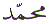
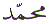

The Arabic letter
Toin ( ). The position of the letter
Toin (
). The position of the letter
Toin ( ) in the normal Arabic character
set is 16. In the Abjad format it is the 9th letter with numerical
value also equal to 9. This article is about the spiritual meaning
of the letter Toin (
) in the normal Arabic character
set is 16. In the Abjad format it is the 9th letter with numerical
value also equal to 9. This article is about the spiritual meaning
of the letter Toin ( ).
).
In Arabic numerology,
Abjad, the letter Toin ( Pronounced as TA)
has the value 9. In normal Arabic character set, it is the 16th
letter. The letter Toin (
Pronounced as TA)
has the value 9. In normal Arabic character set, it is the 16th
letter. The letter Toin ( ) is one of the
Muqattaat (abbreviated) letters. That is,
it is used as a letter in the opening of 4 chapters in the Quran.
It is used in the Quran in 3 combinations as follows:
) is one of the
Muqattaat (abbreviated) letters. That is,
it is used as a letter in the opening of 4 chapters in the Quran.
It is used in the Quran in 3 combinations as follows:
1 Ta Ha - Chapter
20
2 Ta Seen Meem - Chapter 26 and 28
3 Ta Seen - Chapter 27
Since the numerical value
of the Letter Toin ( ) is 9. It is the
highest number. See the article on the Arabic Letter Ba (
) is 9. It is the
highest number. See the article on the Arabic Letter Ba (  ) for further explanation. The human embryo
reaches completion at 9 months. And what is the human being created
from?
) for further explanation. The human embryo
reaches completion at 9 months. And what is the human being created
from?
The combination of the
Arabic Letters Ta Seen Meem occur
twice in the Quran in Chapters 26 and 28. The letter with the
numerical value of 2 is the letter Ba (  ).
Alternatively, if we add all the four chapter numbers that have
the letter Toin (
).
Alternatively, if we add all the four chapter numbers that have
the letter Toin ( ) as the opening
letter we get: 20 + 26 + 27 + 28 = 101.
) as the opening
letter we get: 20 + 26 + 27 + 28 = 101.
If we reduce this to a single digit we get (1 + 0 + 1 = ) 2 (
= ).
).
This is the connection
of the creation with the letter Toin ( ).
).
If we add the two chapter numbers with the letters Ta Seen Meem ,
That is 26 + 28 = 54.
If we now reduce this
to a single digit, we get (5 + 4 = ) 9. This is the numerical
value of the letter Toin ( ).
).
How is the letter Toin
( ). connected with creation?
). connected with creation?
We have been created from Teen
And, we have been created
from Maa 
Now we have the letter
Toin ( ) and the letter Meem (
) and the letter Meem ( ).
But what about the letter Seen (
).
But what about the letter Seen ( ) ?
) ?
The letter Seen ( ) is the secret as mentioned in the book about
the letter Seen (
) is the secret as mentioned in the book about
the letter Seen ( ). With taking on
a bodily form we are prone to diseases and sickness.
). With taking on
a bodily form we are prone to diseases and sickness.
Having been created with
Teen ( = 9) from Ba
(
= 9) from Ba
( = 2) over 9 months, we have all
suffered illness(es) one time or another. The cure is the medicine
if Allah Wills. Surprisingly enough, medicine in Arabic is called
Tibb - . Notice how the
creation is based on these two letters, and the Cure or Medicine
is also based on these two letters. Well, on the letter Toin (
= 2) over 9 months, we have all
suffered illness(es) one time or another. The cure is the medicine
if Allah Wills. Surprisingly enough, medicine in Arabic is called
Tibb - . Notice how the
creation is based on these two letters, and the Cure or Medicine
is also based on these two letters. Well, on the letter Toin ( ). How is that?
). How is that?
First of all, if we look
at the Verse and Chapter numbers above, again they are connected
with the number 9 ( ) and the number
2 (
) and the number
2 ( ).
).
If we add the two together
we get 17 + 82 = 99.
Reducing this to a single digit (9 + 9 = 18) -> (1 + 8) = 9
( )
)
If we subtract the chapter
number from the verse number we get
82 - 17 = 65.
Reducing this to a single digit (6 + 5 = 11) -> (1 + 1) = 2
( )
)
We come back to healing, Medicine, Tibb -
That is one connection. What is
the other connection? What is the healing in the Quran?
If we ask anyone, WHAT HAS BEEN SENT DOWN IN THE QURAN ? We will get a cross section of answers. All these answers can be categorised under the following general headings:
1 Truth about the
existence of a Higher Being or ‘Intelligence'
2 Commandments - Law and Order.
3 Guidance for mankind
4 Existence of Heaven and Hell
5 Healing
6 Mercy
7 History of the human existence
8 Scientific facts
And there may be a few others answers.
Hardly anyone will say
that ARABIC LETTERS have been sent down in the Quran!
Why? Because we cannot see the wood from the trees. Yet, Allah
states openly in the Quran:
What Manifest signs?
Ta Seen. The LETTERS
 . The LETTERS . They are Manifest. They are placed
at the start of the chapter to draw attention to them. Otherwise,
they would have been placed as the last thing in the chapter.
. The LETTERS . They are Manifest. They are placed
at the start of the chapter to draw attention to them. Otherwise,
they would have been placed as the last thing in the chapter.
Therefore, Allah has
placed the healing in the letters of the Quran. As stated in the
book about the Arabic Letter Ha ( ),
"Letters make
the words".
Or to put it another way, Without letters, there can be no words!
Without words, there can be no guidance. The Manifest signs are
the Arabic Letters. The Healing is in the Arabic Letters. The
words of the Quran explain this explicitly.
),
"Letters make
the words".
Or to put it another way, Without letters, there can be no words!
Without words, there can be no guidance. The Manifest signs are
the Arabic Letters. The Healing is in the Arabic Letters. The
words of the Quran explain this explicitly.
Just as the human being takes shape over 9 months from a drop, or dot, so do letters take shape from (ink) dots. There is truth in this statement, if only we take the time to reflect. There is similarity between the writing of the letters and the creation. Just as we recognise our own family members, so do we recognise one letter from another from their shapes. But in reality, whether it is a letter, or a human being, both are a collection of dots. Just different shapes. Allah has placed the healing in the shape of the Arabic Letters, which form the Arabic Words of the Quran:
The healing of the collection of one set of dots (mankind) is by the collection of another set of dots (Letters of the Quran), by Allah's permission. Whether one admits or denies it, the Letters of the Quran have an effect on the human body. In fact, the Letters of the Quran have an effect on mountains. The Letters of the Quran have an effect on all creation.
The dots that make up the Letters of the Quran would alter the dots that make the mountain into bowing down before Allah.
To avoid the physical disease we must keep our body and clothing pure.
There are two kinds of
garments. One is the outer dress. The other is the body itself
which is the garment of the soul. Just as the clothes hide the
body, so does the body hide the soul. We have to keep both of
them pure. The outer bodily purification is done by Tahhara with water. The
inner BATIN  purification
is done by reciting the Letters which form the words of the Quran.
That is the purification of impure thoughts.
purification
is done by reciting the Letters which form the words of the Quran.
That is the purification of impure thoughts.
But the greatest purification is the Kalima Tayyab LA ILAHA ILL ALLAH MUHAMMADUR RASOOL ALLAH. Hence the name Kalima TAYYAB.
There are 4 chapters
in the Quran that start with the letter Toin ( ).
These are:
).
These are:
1 (Ta Ha) Ta Ha Chapter
20
2 (Ta Seen Meem) Ash Shuaara Chapter 26
3 (Ta Seen) An Naml Chapter 27
4 (Ta Seen Meem) Al Qasas Chapter 28
In each of these chapters,
the first person to be mentioned by their proper name is Musa
( ). What is the connection here?
). What is the connection here?
The connection is the
9 (=  ) signs that were given Musa (
) signs that were given Musa ( ) to take to Pharaoh. To emphasise
this, the first occurrence of the letter Toin (
) to take to Pharaoh. To emphasise
this, the first occurrence of the letter Toin ( )
as a Muqattaat Letter is in Chapter 20. If we
look at Chapter 20, The first mention of Musa (
)
as a Muqattaat Letter is in Chapter 20. If we
look at Chapter 20, The first mention of Musa ( )
is in verse 9 (=
)
is in verse 9 (=  ). Where did Musa
(
). Where did Musa
( ) go in pursuit of the fire? The
sacred valley of Tuwa - .
) go in pursuit of the fire? The
sacred valley of Tuwa - .
We now look at Chapter 27 (2+7 = 9) and we find:
What are these 9 Signs?
These 9 signs are mentioned as follows:
1 Drought Chapter
7:130
2 Shortness of Crop Chapter 7:130
3 Flood Chapter 7:133
4 Locusts Chapter 7:133
5 Lice Chapter 7:133
6 Frogs Chapter 7:133
7 Blood Chapter 7:133
8 The Stick turning into serpent Chapter 27:10
9 The Hand turning bright Chapter 27:12
These were the 9 signs
give to Musa ( ) by Allah.
) by Allah.
In the creation of every human being there are also 9 signs. These are stated in the Quran as follows:
If we follow the above verses on creation, the 9 signs in the creation of the human being are:
1 Wet earth
2 Drop
3 Clot
4 Lump
5 Bones
6 Flesh
7 Another Creation
8 Death
9 Resurrection
Notice that animals will only pass through the 8 stages above. They will not be resurrected and judged in the 9th stage. Only human beings will be judged. Hence the 9 months of forming into a human being from clay and drop and the 9 stages of the creation. Speaking of 9 months......
In the Islamic (lunar) calendar, the month of fasting is the month of Ramadan. The month of Ramadan is the 9th month. The fasting is prescribed for 30 days. What is the reason for fasting? It is the Commandment of Allah. It is the month in which the Noble Quran was first Revealed. The fast is observed from dawn till sunset. The fast is the abstention from food, drink and other lawful things during the stated time period. That is the physical aspect. The spiritual side is the same as above but with the added restrictions on physical or verbal abuse. Refraining from evil thoughts and actions.
The 9th (=  )
month is for fasting 30 (=
)
month is for fasting 30 (=  ) days
to subdue the body (=
) days
to subdue the body (=  ). It is for creating
Talab - .
). It is for creating
Talab - .
Talab is TO SEEK. Talab is TO LOOK FOR.
To Seek what ? To Look For what ?
To seek the pleasure of Allah. To know our Creator. To look for the Truth. And the Truth is all around us. When the brain is less occupied with digesting heavy meals, it is better occupied in searching for the Truth.
The other important thing about the 9th month is the Blessed Night Laylat ul Qadr which is better than a thousand months.
This means 21, 23, 25, 27 and 29 nights. And speaking of odd numbers....
The number ‘9' the
numerical value of the letter Toin ( ) is
quite unique. First of all, it is an odd number as opposed to
even number. It is the only number that can be multiplied by any
other number and the result can be reduced to a single digit equal
to 9.
) is
quite unique. First of all, it is an odd number as opposed to
even number. It is the only number that can be multiplied by any
other number and the result can be reduced to a single digit equal
to 9.
For example:
1 x 2 = 2
2 x 2 = 4
3 x 2 = 6
......
9 x 2 = 18 -> 1 + 8 = 9
9 x 123456789 = 1111111101 -> 1+1+1+1+1+1+1+1+0+1 = 9
9 x 5555 = 49995 -> 4+9+9+9+5 = 36 -> 3+6 = 9
No other number falls into this category.
We have been looking
at the letter Toin ( ). The
letter Toin (
). The
letter Toin ( ) is
connected with the Letter Ba (
) is
connected with the Letter Ba (  ). How
the creation from the dot takes 9 months to form into a human
being. The human being is created in the image of Rahman. The
cure or medicine is TIBB - .
). How
the creation from the dot takes 9 months to form into a human
being. The human being is created in the image of Rahman. The
cure or medicine is TIBB - .
The name of Allah's Beloved
is Muhammad  . Is it surprising
that the numerical value of the name of Allah's Beloved 
. Is it surprising
that the numerical value of the name of Allah's Beloved  = 92
?
= 92
?
No wonder Allah RABBIL ALAMEEN (LORD OF THE WORLDS) Blessed His Beloved Muhammad
 with the TITLE: RAHMATAL LIL ALAMEEN (MERCY TO ALL THE WORLDS )
with the TITLE: RAHMATAL LIL ALAMEEN (MERCY TO ALL THE WORLDS )
| BACK |